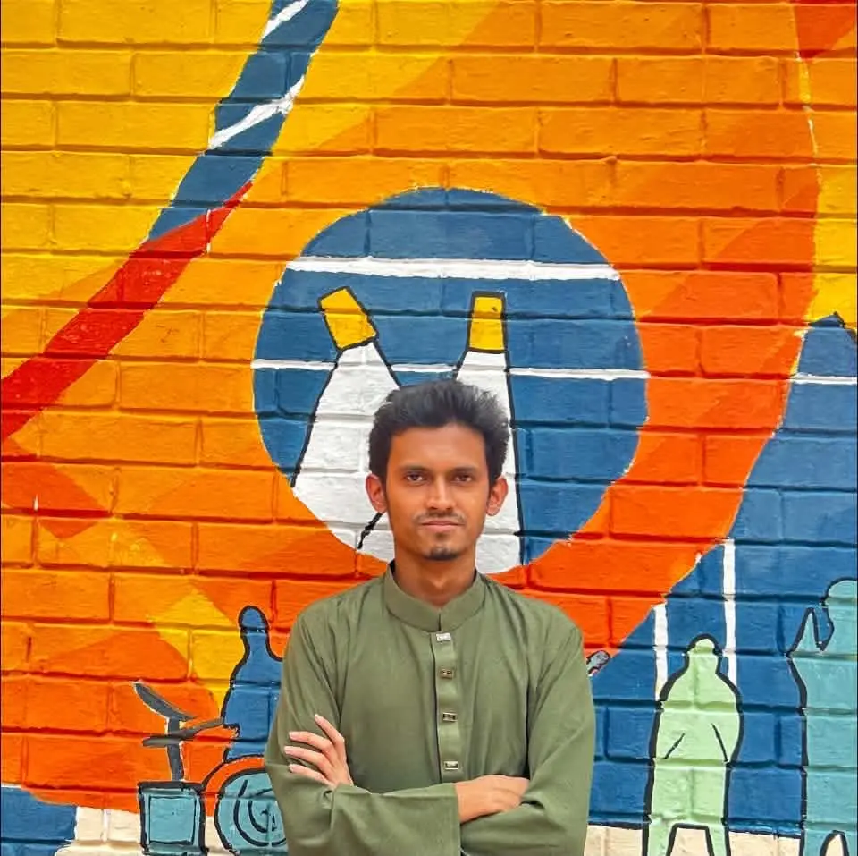

Biomedical Engineer
PhD Applicant, Fall 2027
Hello, I’m Mehedi Hasan Nirzan, a prospective PhD applicant for Fall 2027 with research interests in cardiovascular mechanics, computational biomechanics, physics-informed neural networks, and digital-twin modeling. I completed my Bachelor of Science in Biomedical Engineering at the Bangladesh University of Engineering and Technology (BUET) in 2026. I currently serve as a Research Engineer at Cortex Advisory and a Research Assistant with the BioInnovation Research Group, Department of Biomedical Engineering, BUET.
- Patient-specific CFD
- FSI
- CCTA models
- PINN
- Digital twins

BUET · 2026